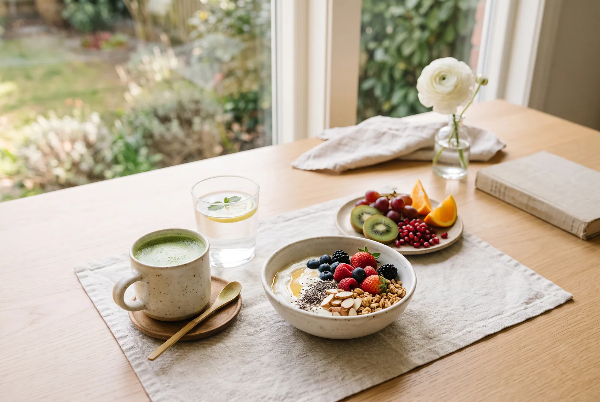
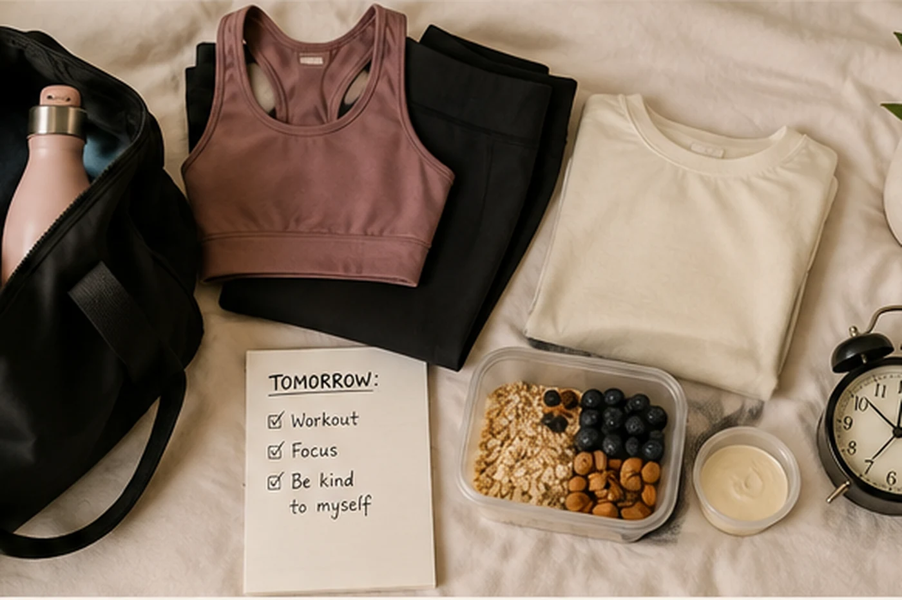

Most morning routines you see online look like a part-time job: an early alarm, a full workout, a specific breakfast, journaling, cold water, and no phone for an hour, all stacked one after another before most of the world is even awake. If that kind of routine sounds exhausting rather than motivating, it may simply be too complicated for real life.
A healthy morning routine doesn't need ten steps or a 5 a.m. wake-up to be worth having. It needs to fit the morning you actually get, on the days you actually get it. Below are simple morning routine ideas to pick from, along with a few flexible ways to put them together depending on whether you have five minutes or thirty.
Start With a Morning Routine You Can Actually Repeat
Before adding habits, it helps to get the basics right. Getting enough sleep matters more than forcing an especially early wake-up time — a rushed 5 a.m. start built on five hours of sleep isn't doing you any favors. Waking up within a reasonably consistent window each day can help mornings feel less chaotic, but there's no single "correct" wake-up hour. What works for one schedule won't work for another, and that's fine.
The same goes for the routine itself. Rather than trying to rebuild your entire morning overnight, start with two or three habits that genuinely fit your life. Leave room for different kinds of days — a routine that only works when everything goes perfectly isn't a routine, it's a best-case scenario. Perfection was never the goal here; repeatability is.
Healthy Morning Habits Worth Trying
Think of this less as a checklist and more as a menu. You don't need all of it — a couple of these, done consistently, will do more for your mornings than trying to fit in everything at once.

Get Some Natural Light
Getting a bit of natural light after you wake up can help you feel more alert and ready for the day. If it's practical, step outside for a few minutes, or open the curtains and spend some time near a window. There's no need to time it precisely — the idea is simply to let in some daylight when you can.
Drink Some Water
A glass of water after waking is an easy way to start hydrating for the day. That's really the whole idea — no need to overthink it, and no need to drink it before your coffee if coffee is part of your morning too. Both can be part of the same routine.
Add a Little Movement
Movement doesn't have to mean a full workout. A short walk, a few easy stretches, taking the dog out, or a quick bodyweight sequence all count. If you already enjoy training in the morning, that works too — morning exercise isn't inherently better than exercise at any other time of day, so this is really about what fits your schedule and energy, not a rule to follow.
If strength training at home is part of your routine, our guide to home workout essentials can help you build a practical setup without overbuying.
Eat Breakfast If It Works for You
Breakfast is optional, not mandatory. If you enjoy eating in the morning, building the meal around something satisfying — eggs, Greek yogurt, cottage cheese, oats with a bit of protein, or fruit alongside one of these — is a simple way to make it feel more filling. If you're not hungry first thing, that's a completely normal way to start the day too.
Give Yourself a Simple Mental Reset
This can be whatever helps you feel a little more oriented before the day picks up speed: jotting down your top priorities, a short to-do list, a few minutes of quiet before checking your phone, journaling, or simply drinking your coffee without immediately opening social media. None of these are required — they're options worth trying if mornings tend to feel scattered.
Build Your Routine Around the Time You Actually Have
The same person can use a completely different version of their morning routine depending on the day, and that's the point. None of these is the "correct" one — they're templates, not requirements.
5-Minute Morning Reset
For rushed weekdays, late starts, travel, or anything chaotic:
- Drink some water.
- Open the curtains or step toward a window for a bit of natural light.
- Spend a couple of minutes getting ready intentionally, rather than rushing on autopilot.
This isn't a shortened version of a "real" routine — it's a complete one for the kind of morning you're having.
15-Minute Healthy Morning Routine
A realistic middle ground for most weekdays:
- Water, first thing.
- A few minutes of natural light, even just by a window.
- A short walk or some easy mobility.
- A brief moment to note your priorities for the day or just gather your thoughts.
This doesn't need to be timed to the minute. Think of it as a loose shape rather than a schedule.
30-Minute Slower Morning
For weekends, work-from-home days, or mornings with more breathing room:
- Natural light, ideally outside.
- A longer walk, some movement, or a workout if that's part of your routine.
- Breakfast, if you feel like it.
- A little unhurried time for planning, journaling, or just sitting with your coffee.
The 30-minute version isn't a "better" morning than the 5-minute one — it's just what a slower day allows for.
Make Tomorrow Morning Easier Tonight
A few minutes of preparation the night before can remove a lot of friction the next morning:
- Lay out clothes for the day, whether that's for work or a workout.
- Set out breakfast ingredients, or anything else you'll need first thing.
- Pack a bag if you'll need one.
- Jot down tomorrow's priorities while they're still fresh.
- Charge whatever needs charging.
None of this needs to become its own elaborate ritual — the goal is just to clear a few small obstacles out of tomorrow's way, not to add another long routine to tonight.

What You Don't Need for a Healthy Morning
It's worth saying plainly: you do not need a 5 a.m. alarm, ten consecutive habits, an hour-long workout, supplements, expensive wellness gadgets, detox drinks, an elaborate breakfast, or perfect consistency to have mornings that feel good. A lot of what gets marketed as "essential" for a healthy morning is really just optional. None of it is required for a routine that's genuinely useful and manageable to keep up.
How to Make Your Morning Routine Stick
Start smaller than you think. Two or three habits are easier to keep than eight, and a routine you actually do beats a longer one you keep abandoning.
Attach new habits to things you already do. Keep water near the coffee maker, do a short stretch after brushing your teeth, or think through your priorities while your coffee brews. Tying a new habit to an existing one makes it easier to remember without turning it into a production.
Make the easy choice the visible one. Clothes laid out where you'll see them, water within reach, a notepad by the coffee maker — small environmental cues can make a habit easier to remember and follow through on.
Let the smaller version count. If your usual routine is fifteen minutes but today only allows for five, the five-minute version still counts as doing the routine. It's not a lesser attempt.
Don't treat one missed morning as a failure. Habits can take weeks or months to start feeling automatic, and the timeline varies widely from person to person and habit to habit. Skipping a day here or there doesn't undo the progress you've made; it's a normal part of building something that lasts.
Frequently Asked Questions
What is a healthy morning routine?
It's a repeatable combination of small habits that supports how you actually want to feel during the day — not a fixed formula everyone has to follow the same way.
How long should a morning routine be?
There's no required length. A five-minute version can be genuinely useful if it's one you'll actually do, and a thirty-minute version isn't automatically better.
Do I need to wake up at 5 a.m.?
No. Getting enough sleep and having a routine that fits your actual schedule matters more than copying an early wake-up time that may not suit your life.
What should I do first thing in the morning?
There's no mandatory first step. Water, a bit of natural light, getting ready, or a little movement are all reasonable places to start — pick whichever feels easiest to keep up.
Is breakfast necessary for a healthy morning routine?
No single breakfast approach works for everyone. If you enjoy eating in the morning, a satisfying, protein-inclusive meal is a solid option. If you don't have much appetite first thing, there's no need to force yourself to eat right away.
How do I stick to a morning routine?
Start with fewer habits than feels ambitious, attach them to things you already do, reduce the friction around them, and keep a shorter fallback version for busy mornings.
What if I only have five minutes in the morning?
Use the 5-minute reset above — water, a little light, and getting ready with some intention. It's a complete routine for that kind of day, not a compromise.
A healthy morning routine isn't about doing everything on this list — it's about choosing one or two habits that would genuinely make tomorrow easier, trying them consistently, and letting the rest adapt to whatever your actual mornings look like.